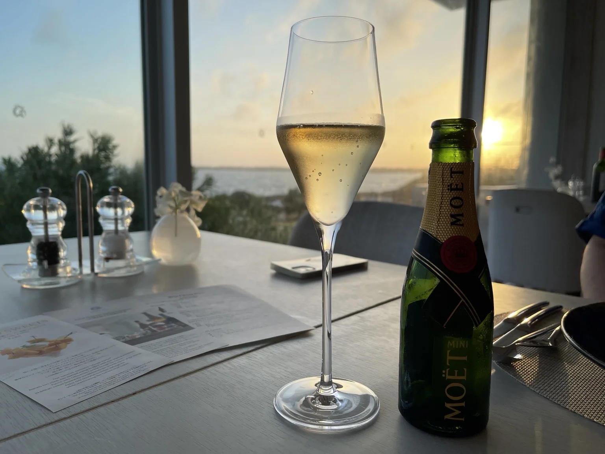
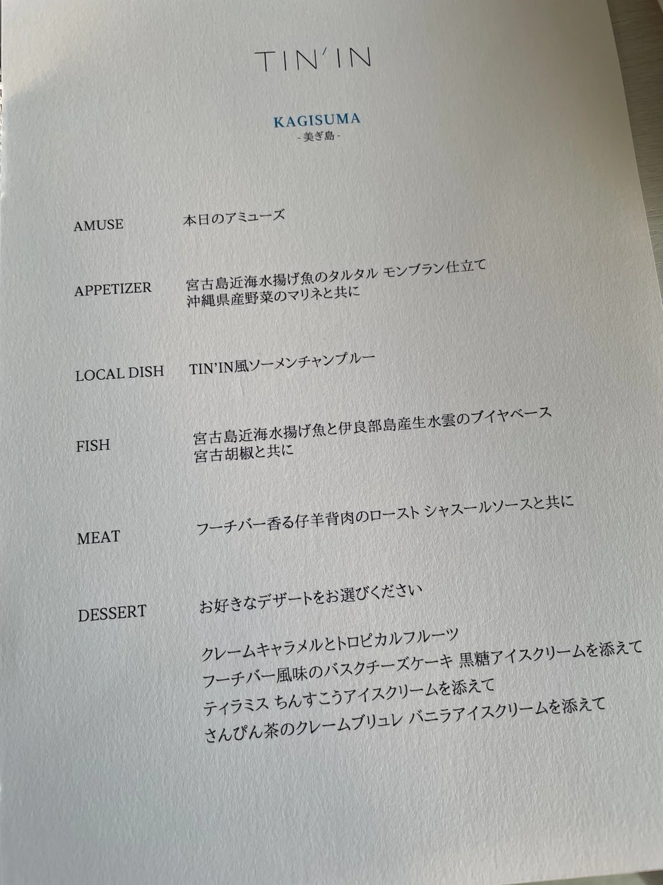
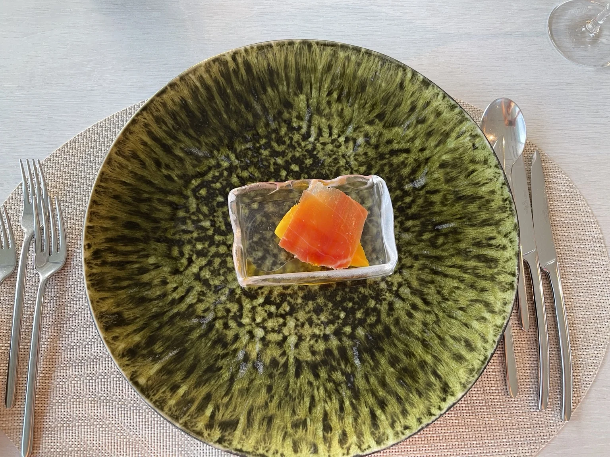
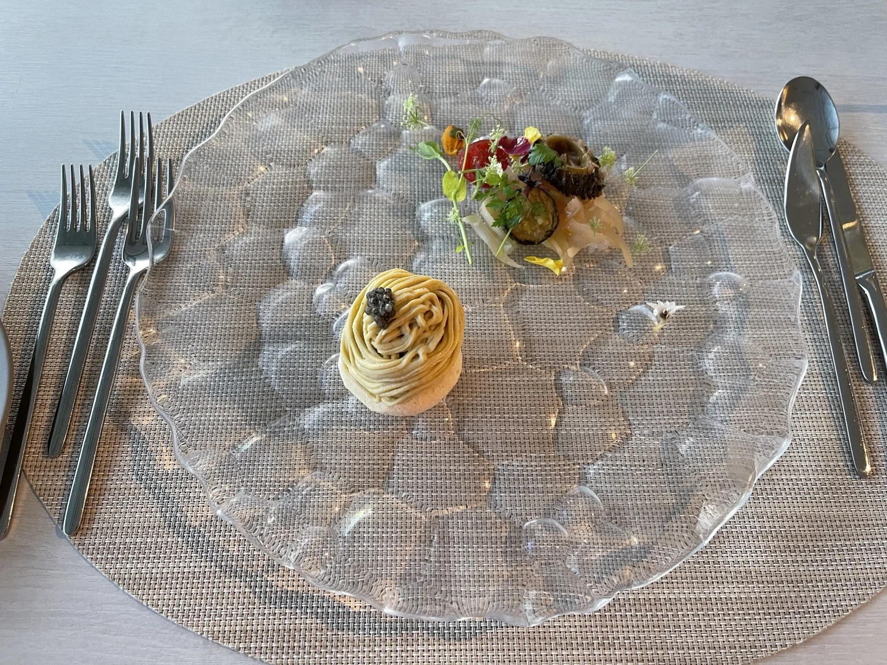
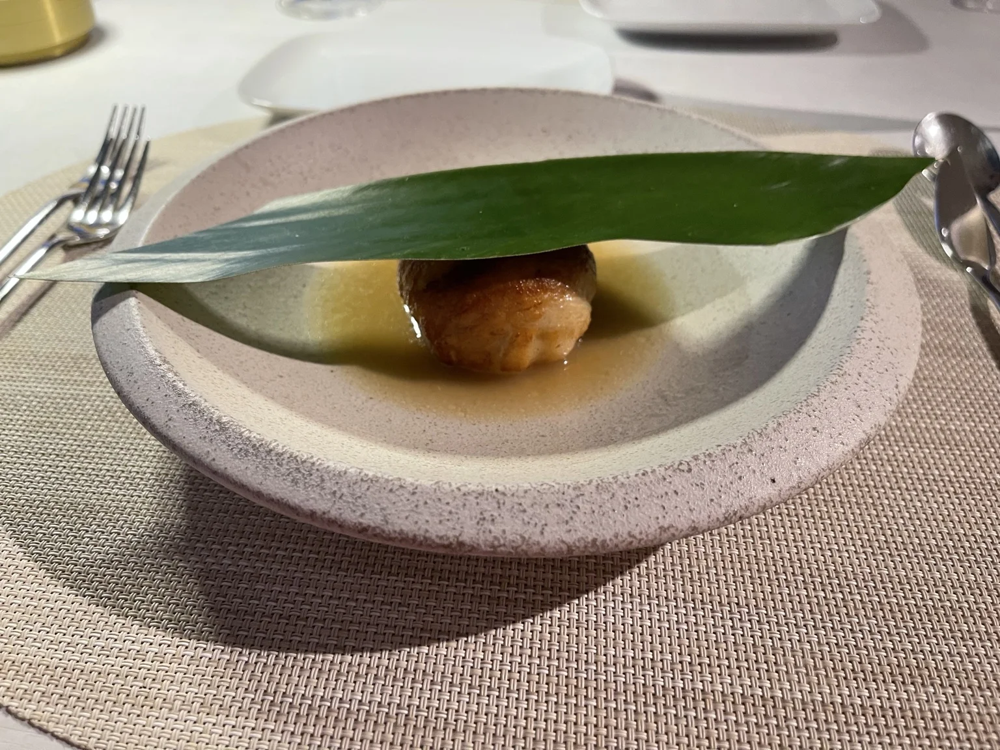
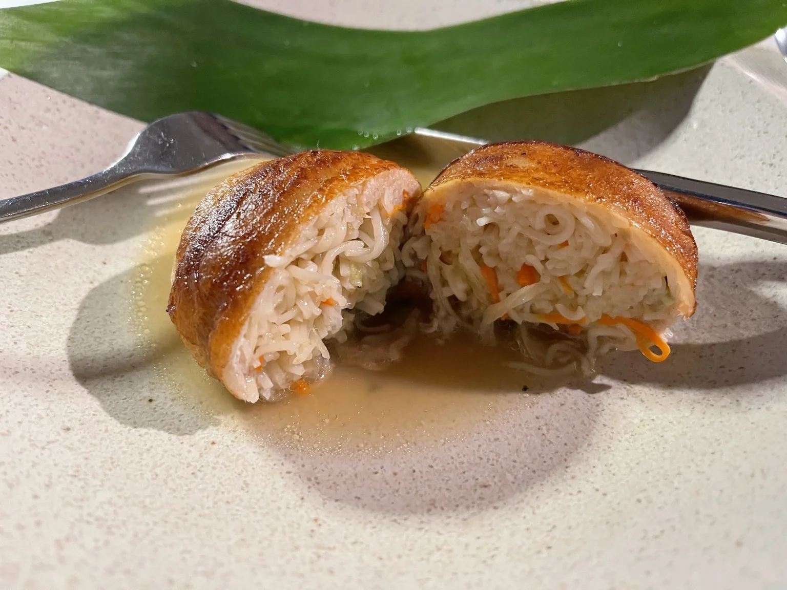
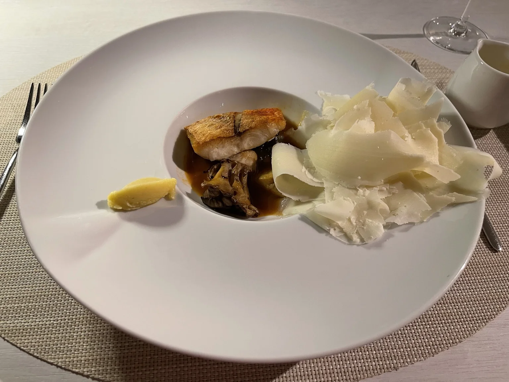
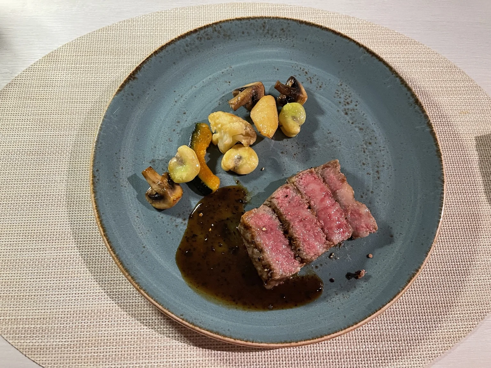
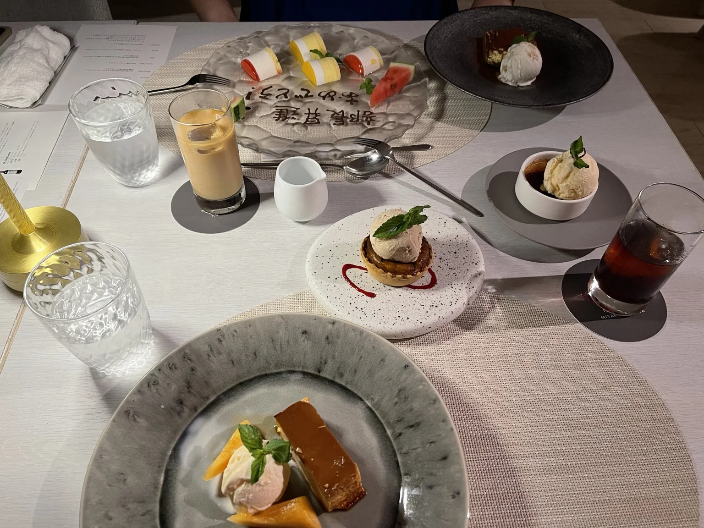

夕暮れから始まった記念日ディナー
主役は、料理というより、この時間だった。
📍 沖縄県宮古島市（伊良部島）

窓の外が、ゆっくり暮れていく。
まずは、シャンパンで乾杯。
グラス越しに、海へ日が沈んでいく。
今夜は、記念日のディナー。

コースは、TIN'IN の「美ぎ島」。
料理名を、ひとつずつ確かめる。
アミューズから、デザートまで。
宮古の海と島の食材が並んでいた。

本日のアミューズ。
マンゴーの甘さに、生ハムの塩気。
最初のひと口から、南の島の味がした。

宮古島近海の魚のタルタル、モンブラン仕立て。
泡のようなガラスの器に、そっと。
見た目も、涼しげだった。

TIN'IN風ソーメンチャンプルー。
月桃の葉をのせたまま、登場する。
中身は、まだ見えない。
何が出てくるのか、少し身構える。

月桃の葉をめくると、豚バラ肉で包んだソーメンチャンプルー。
表面は香ばしく、中には野菜を合わせたソーメンが詰まっていた。
月桃の葉で包むようにして食べると、爽やかな香りが重なる。
見た目だけでなく、食べ方まで面白い一皿だった。

魚料理は、ブイヤベースを目の前で注いでもらう。
伊良部島産の生もずくと、宮古胡椒。
仕上げに、チーズを削って。

メニューは仔羊のローストだったけれど、
サーロインに変更してもらった。
断面は、きれいなロゼ。
火の入り方が、ちょうどよかった。

デザートは、選びきれずに全種類。
テーブルの上が、一気に賑やかになった。
その向こうには、事前にお願いしていた
「部長昇進おめでとう！」のプレート。
夕暮れに始まって、記念日のプレートで終わった。
長い、いい夜だった。